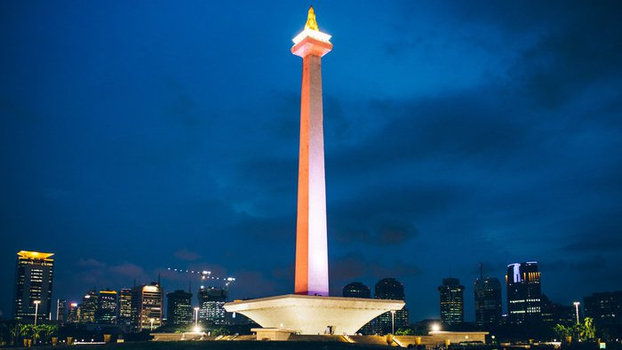
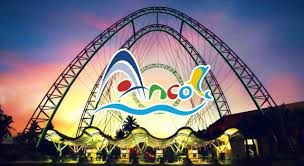

<html>
    <head>
        <title>Tugas Pemrograman Web</title>
        <link rel="stylesheet" href="style.css" type="text/css">
    </head>
</html>
<body>
    <header>
        <div class="nav-bar">
             
            <ul class="menu">
                <li> <a href="index.html">Home</a> </li>
                <li> <a href="Profile.html">profile</a> </li>
                <li> <a href="hometown.html">hometown</a> </li>
                <li> <a href="food.html">food</a> </li>
                <li> <a href="tourist.html">tourist</a> </li>

            </ul>

        </div>
        <div class="Tourist">
            <h1 style="font-size:50px">TOURIST PLACE</h1>
            <h2 style="font-size:40px">MONAS</h2>
            
            <p style="font-size:30px">1. MONAS is in Jakarta’s city centre of Merdeka Square, stands the National Monument (Monumen Nasional (Monas)) tower. It is recommended to visit for every 
                tourist in Jakarta as it is a symbol to be beckon with. It stands to symbolize the fight for Indonesia and constructed under direction of President Sukarno. It is open daily from
                08.00-15.00 everyday except last Monday of the month.</p>
            <h2 style="font-size:40px">Taman Mini Indonesia Park</h2>
            
            <p style="font-size:30px">2. Taman Mini Indonesia Park The park has a spread of 250 acres and is full of heritage and traditions that make Indonesia stand out from the crowd. 
                You will come across a number of themes pavilions. There is a detailed miniature of the archipelago of Indonesia, an IMAX cinema to enjoy some of the best movies running 
                at the time of your visit, a traditional theatre that host regular events and a cable car. This huge park is considered one of the best places to visit in Jakarta in one 
                day not only for the tourists but also for the locals. Traveling to Jakarta with your family and little ones- Make sure you bring them to this wonderful place at least once 
                on your trip.</p>
            <h2 style="font-size:40px">Ancol Dreamland</h2>
            
            <p style="font-size:30px">3. Ancol Dreamland It is a place that have many entertaintment place and it open for 24 hours for the enter Gate this place comes with 
                amusement park – Fantasy World (Dunia Fantasi (dufan)), Atlantis Water Adventure(Swimming Pool), Ocean Dream Samudra (pentas lumba) for animal shows, Seaworld(aquarium), 
                beaches (pantai), Art Market (pasar seni), golf range, bowling, Ocean Eco Park, gondola, Hailai club, art academy, paintball and wakeboarding.</p>
            <h2 style="font-size:40px">National Museum of Indonesia</h2>
            
            <p style="font-size:30px">4. National Museum of Indonesia is two centuries old, National Museum of Indonesia (musium nasional) is an icon that you must visit. It is 
                located at Jalan Medan Merdeka Barat in center of Jakarta city and it is an archeological, historical, ethnological, and geographical museum. Jakarta’s national 
                museum is well known as Elephant Building (gedung gajah) because of the elephant statue there. Visit here to get yourself acquainted with Jakarta and also Indonesia’s 
                history and culutre.</p>

        </div>
    </header>
</body>